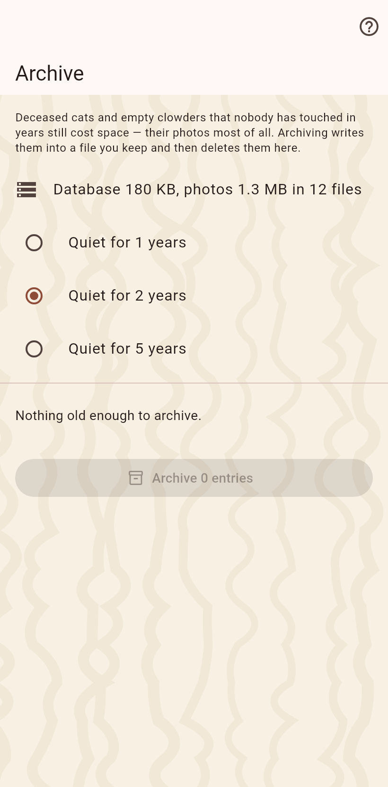

Old data costs space, above all the photos, which every synced device carries. Here you pick what has been quiet for years, write it into a file you keep, and delete it.

Deceased cats and empty homes that nobody has touched for the time you choose, as a list of radio buttons for how long the archive waits. The file holds everything about them, photos included.
A moment is recorded, the file is written, the records are deleted. The deletion reaches everyone you sync with; importing the file restores everything.